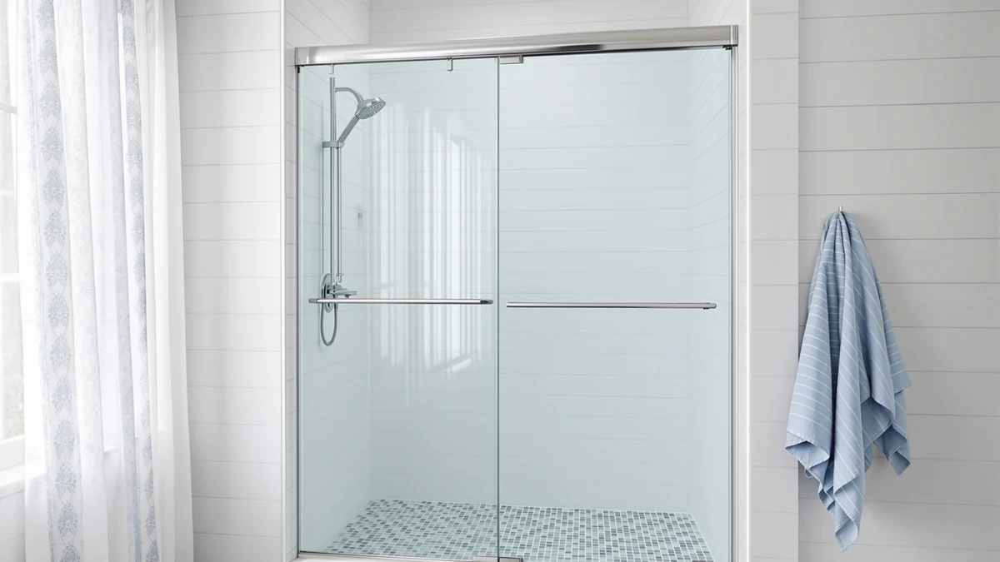

Best Thing to Clean Glass Shower Doors with: Complete Guide (2026)
Prices and picks verified as of October 2026. Independent, reader-supported reviews.


Things to Know Before You Buy
- The best thing to clean glass shower doors with depends on whether you're fighting soap scum, hard water deposits, or both, since each forms differently and responds to different chemistry.
- A daily squeegee pass prevents more buildup than any cleaner removes after the fact.
- Acid-based hard water removers cut through heavy mineral crust faster, but non-acid formulas are gentler on tinted or coated glass.
- Diluted dish soap or white vinegar handles light, fresh soap scum, but won't touch hard water stains that have had months to set in.
- Water-repellent coatings stretch the time between deep cleans, but wear off and need reapplication every few months.
The best thing to clean glass shower doors with isn't one bottle that does everything. It's matching the right formula to your water type and glass finish, then backing it up with a habit you actually keep.
Soap scum and hard water deposits build up for different reasons, so a cleaner that cuts through filmy soap residue often does little against a chalky mineral crust, and the reverse holds too. We compared the ingredients, application methods, and reviewer feedback across daily sprays, acid-based removers, and water-repellent treatments to sort out what actually works on shower glass.
This guide covers the categories worth considering, how to match one to your water and frame type, the mistakes that waste a good product's effectiveness, and the maintenance routine that keeps buildup from coming back. If your glass has already etched past the point cleaning can fix, we've included a few replacement doors worth a look too.
What You Need to Know
Glass shower doors collect two different kinds of grime, and figuring out which one you're dealing with changes the best thing to clean glass shower doors with in your bathroom. Soap scum forms when soap, body oils, and shampoo residue combine with water and dry onto the glass as a cloudy film. Hard water deposits form separately: water high in calcium and magnesium evaporates off the glass and leaves mineral residue that bonds to the surface, eventually etching into it if left alone.
Most households deal with a mix of both, which is why a single all-purpose glass cleaner often leaves one problem untouched while it handles the other. A degreasing spray cuts through soap scum quickly but barely dents a mineral crust, while an acid-based remover dissolves calcium deposits but does little for an oily film.
A cloudy, slightly greasy film points to soap scum. A chalky white crust near the bottom of the door or around the frame points to hard water, and both at once is common in households with hard tap water. Your frame material and glass coating matter as much as the grime itself: a factory water-repellent coating can be damaged by aggressive acids, so check the manufacturer's care instructions before reaching for the strongest cleaner on the shelf.
Types and Categories
When you're deciding on the best thing to clean glass shower doors with, the options fall into a handful of practical categories once you look past the marketing claims. Soap scum removers, usually sold as sprays, are formulated to break down the combination of soap residue, body oils, and minerals that forms a filmy coating on glass. They work fast on fresh buildup and double as a quick daily or weekly maintenance step.
Hard water and mineral stain removers are a separate category built around citric acid, phosphoric acid, or a non-acid mineral-dissolving formula. These target calcium and lime deposits specifically and need more contact time than a soap scum spray, since they're breaking a chemical bond rather than lifting a surface film.
DIY options, mainly diluted white vinegar or a vinegar-dish soap mix, handle light buildup of either kind at close to no cost. Reviewers consistently note that vinegar cuts through fresh soap scum and light mineral spots reasonably well, though it works slower than a dedicated commercial product on anything that's had months to set in.
Water-repellent treatments don't clean anything that's already there. Instead, they coat the glass so water beads up and slides off before it can dry into a new spot, stretching the time between deep cleans but doing nothing for existing stains. A plain squeegee and microfiber cloth aren't cleaners in the chemical sense, but they belong on this list anyway, since consistent use prevents more buildup than any bottle removes after the fact.
How to Choose
Choosing the best thing to clean glass shower doors with starts with identifying which problem you actually have: soap scum, hard water, or both. If you're not sure, a water hardness test strip from a hardware store settles the hard water question in under a minute.
Factor in how your glass and frame are finished before picking a formula. A factory anti-fog or water-repellent coating can be damaged by the strongest acid-based removers, so check the manufacturer's care instructions first. Tinted, low-iron, or anodized-frame doors generally do better with a non-acid formula, since some acidic cleaners dull those finishes if left on too long.
Think about how much buildup you're dealing with and how old it is. Fresh soap scum or light mineral spots respond to almost anything, including diluted vinegar, but crust that's been sitting for months usually needs a stronger acid-based remover or a paste formula you can leave on longer, since paste clings to vertical glass better than a spray.
Ventilation deserves more thought than most buyers give it. Acid-based removers and some soap scum sprays release a sharp smell in an enclosed bathroom, so confirm you have a working fan or an openable window before buying the strongest option on the shelf.
Finally, consider the applicator and how much daily maintenance you're willing to do. A trigger spray covers a large door fast but tends to drip at the base, while a paste with a dedicated pad gives more control around hardware. A squeegee and a mild spray after every shower keep buildup from forming at all, which means you can skip the priciest removers and save them for occasional deep cleans.
Common Mistakes to Avoid
The most common mistake when you clean glass shower doors is scrubbing with an abrasive sponge, steel wool, or a scouring pad. Rough scrubbing on glass that's already starting to etch only deepens the damage, and once glass is etched, no cleaner reverses it. Stick to a soft microfiber cloth or the applicator pad the product ships with.
Mixing cleaning products is another frequent error. Combining an acid-based hard water remover with bleach or an ammonia-based glass cleaner produces toxic fumes fast in a small, enclosed bathroom. Use one formula at a time and rinse the glass completely before switching to anything else.
Letting a cleaner air-dry on the glass instead of rinsing it off defeats the purpose, since the old film gets a fresh layer on top. Wipe and rinse within the window the label specifies, and test a small, out-of-sight corner first if your glass is tinted or coated, since acidic formulas can dull certain finishes.
The last mistake is treating the squeegee as optional. Even the best cleaner only resets the glass to zero, and without a quick pass after every shower, buildup starts rebuilding within days.
Care and Maintenance
The easiest way to keep glass shower doors clean long-term is a short daily habit, not a stronger product. A squeegee pass after your last shower of the day takes under a minute, and towelling off the bottom track keeps standing water from sitting against the seal.
Follow that with a light weekly wipe-down using a mild spray or diluted vinegar, paying extra attention to corners and the track where residue collects fastest. Plan a deeper clean with a dedicated remover every four to six weeks on hard water, or every two to three months if your supply is softened, then rinse and dry the glass so the rinse water itself doesn't leave new spots.
If you use a water-repellent coating, reapply it on the schedule the manufacturer lists, typically every one to three months. Owners report that skipping reapplication is the main reason a repellent stops working sooner than expected, so store every cleaning product upright and out of a child's reach.
Our Top Picks
Cleaning only goes so far once hard water has etched into glass shower doors or a frame has warped enough that it won't seal anymore. These three doors are worth a look if replacing is the more practical fix instead of fighting the same stain every week.

Editor's Pick
Hydrave Corner Shower Enclosure 34
A corner frameless enclosure that gives you a clean slate when etched or pitted glass can't be restored, with a compact footprint that fits tighter bathroom layouts.
$269.99
Check Price on Amazon
Best Value
Frameless Glass Shower Door Lock
If your door won't stay sealed, which is often why water pools and buildup accumulates faster in the first place, this replacement lock fixes the root cause for about $13 instead of a full door swap.
$12.99
Check Price on Amazon
Premium Choice
Findepot Frameless Sliding Shower Door
A full sliding frameless replacement for glass that's past saving, with a wider panel size for households upgrading from a smaller, harder-to-clean enclosure.
$541.48
Check Price on AmazonFrequently Asked Questions
What is the best thing to clean glass shower doors with?
For most households, it's a dedicated soap scum or hard water remover matched to the type of buildup you have, rather than a general glass cleaner. Light grime responds to diluted vinegar or dish soap, while set-in mineral crust needs a stronger acid-based or non-acid formula.
Does vinegar damage shower glass?
Diluted white vinegar is safe for most shower glass and dissolves light soap scum and mineral spots at close to no cost. Avoid using it full-strength near natural stone thresholds or tile, since the acidity can etch stone surfaces over repeated use.
How do you remove hard water stains from a frameless glass shower door?
Apply a hard water remover built around citric acid, phosphoric acid, or a non-acid mineral solvent, let it sit for the contact time the label specifies, then wipe with a microfiber cloth and rinse. For crust that's set for months, a paste that clings to vertical glass usually beats a spray.
Can you use Dawn dish soap on shower doors?
Dawn dish soap cuts through light soap scum and body oil residue reasonably well when diluted, and owners report using it as a between-cleans wipe-down. It does little against hard water deposits, since dish soap isn't formulated to dissolve mineral buildup.
How often should you clean a glass shower door?
A squeegee pass after every shower and a light weekly wipe-down keep most buildup from forming at all. Plan a deeper clean with a dedicated remover every four to six weeks on hard water, or every two to three months if your supply is softened.
Verdict
The best thing to clean glass shower doors with comes down to matching the formula, and the habit, to the grime you're actually dealing with rather than grabbing whatever bottle is labeled for glass. Soap scum calls for a degreasing spray or diluted vinegar, hard water deposits call for a dedicated mineral remover, and most bathrooms deal with some combination of both. A daily squeegee pass and a weekly wipe-down prevent more buildup than any single product removes after the fact, and a scheduled deep clean every four to six weeks keeps things from getting away from you.
If your glass has already etched past the point cleaning can fix, or your door won't seal anymore no matter how clean it is, replacing it is the more practical move. Hydrave's corner frameless enclosure is worth a look for exactly that situation, giving you a clean slate instead of another round of scrubbing that won't undo permanent damage.